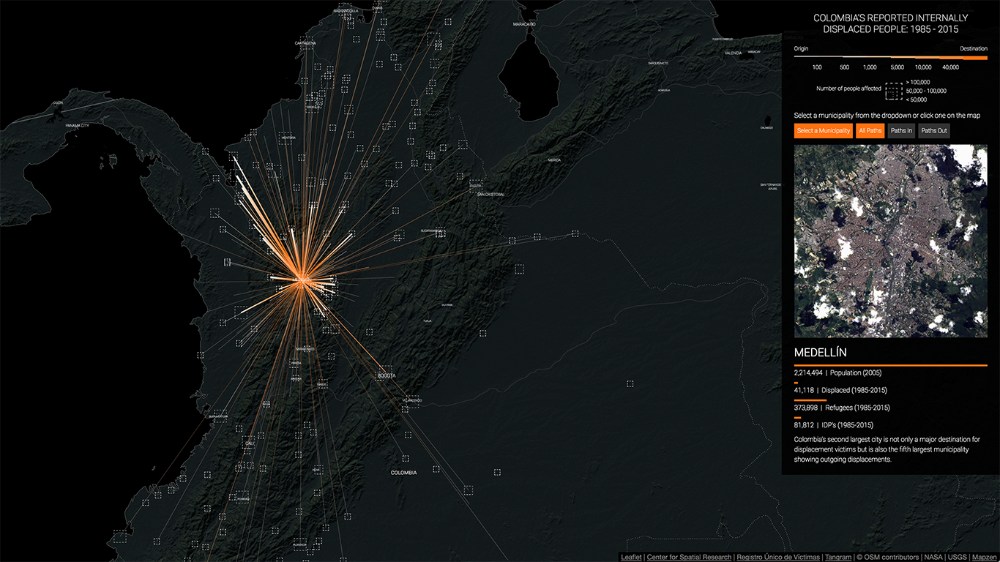
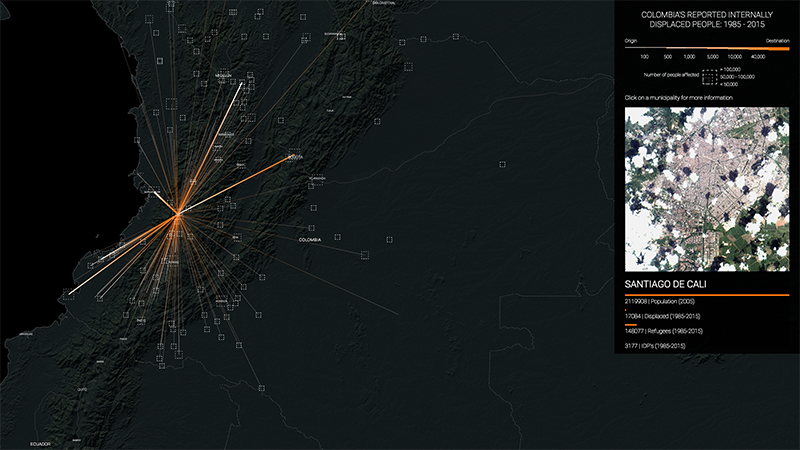
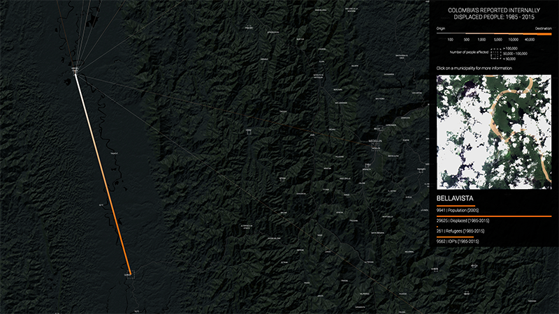
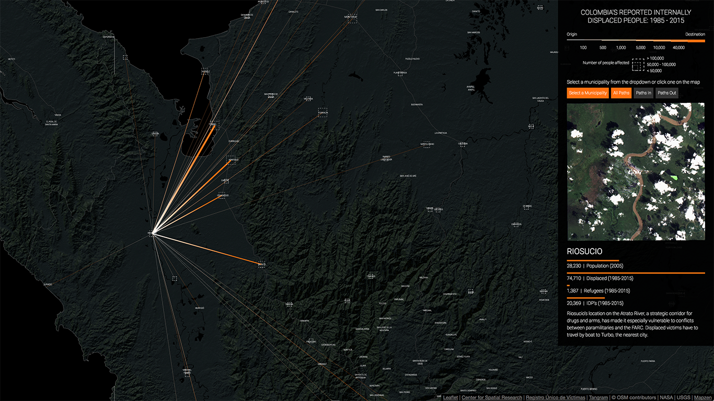
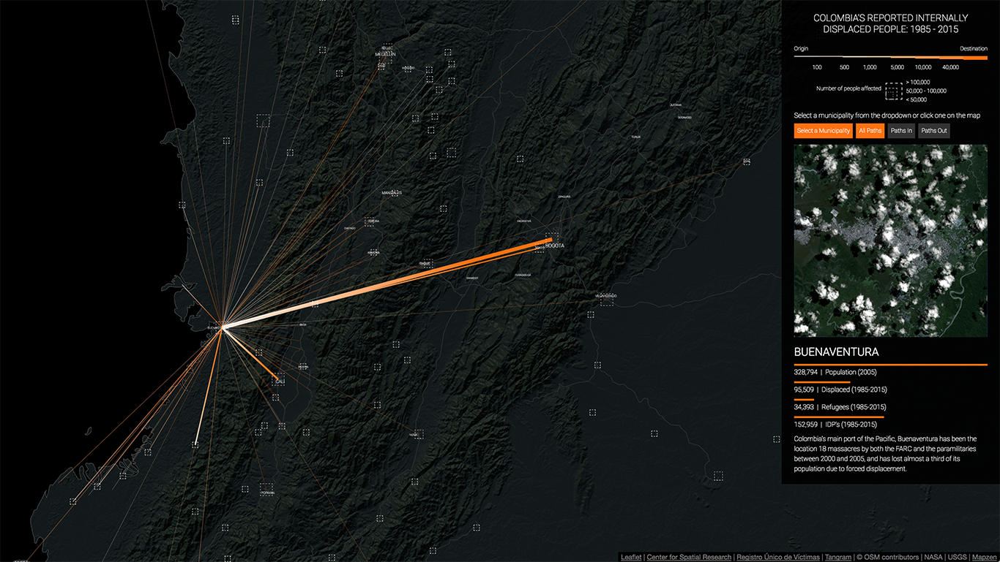
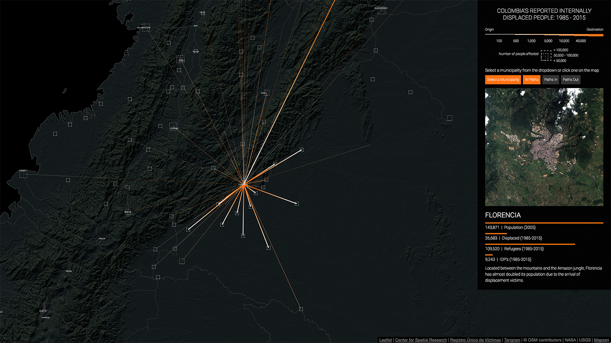
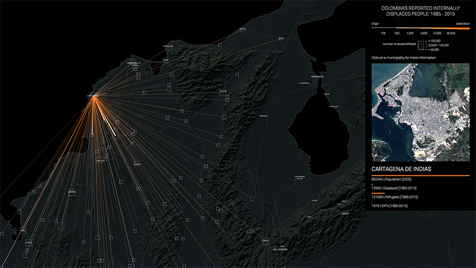
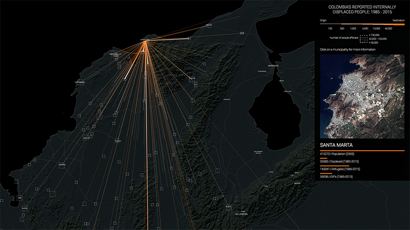

ABOUT
Over the course of the last thirty years, almost 7 million Colombians
have left their homes and towns in a search for safety. This mass migration,
with its dense network of specific and often hyper-local
causes, forms one part of the much larger global story of human beings on the
move, mostly from countryside to city. But this movement of people also underlines
the fact that the massive urbanization of the planet is born out of conflict.
Behind this seemingly inevitable transformation lies battles of all sorts:
military, political, social, economic, ethno-religious, imperial, and
ecological.
In Colombia, the armed conflict, if not the movement, might be nearing its end.
After more than three years of negotiations between the government and the FARC
- and following a controversial demobilization process by the paramilitaries in 2005
- the two parties have finally signed a historic peace accord. In this project we
plot the trajectories of these Colombians in conflict, thanks to one dataset:
the
Registro Único de Víctimas, a massive project undertaken by the Unidad para
la Atención y Reparación Integral a las Víctimas as part of an effort to allocate
reparations in the peace-building process.
As of May 1, 2016, 8 million Colombians were registered in the database and more
than 6.2 million of them were "subjects of aid and reparation." The data reflects
their stories - not simply the ones that will lead to aid, but the thick, complicated
and often contradictory narratives of an extended and multi-sided conflict, an
archive of the memories of millions of people. How has this war affected cities?
And how has the conflict played out in the countryside? How have cities - small,
medium and large - coped with these massive influxes of displaced people? Can
spatial analysis - indeed spatial memory - figure into discourses of cultural and
historical memory? And what relationships can we discover between land use and
conflict or the built environment and war?
Government agencies have led data collection efforts designed to inform policy;
cultural and civic groups have led extensive efforts to document cultural and
historical memory with the intention of furthering transitional justice. Our
work is situated between these two realms: it introduces spatial memory into the
discourse of transitional justice, and provides insights that might inform
nuanced transitional justice policies that are responsive to local needs and
cognizant of socio-spatial phenomena.
INTERACTIVE MAP
Our interactive map shows the paths of internally displaced people from 1985 to 2015.
The thickness of the lines represents the number of people that were displaced, from 100 to 40,0000,
and the colors represent the direction of the displacement, white is the origin and orange the destination.
You can click on some of the municipalities to see only the displacements to and from that
location and to bring up a side panel with more information. This panel contains a satellite
image of the selected municipality (courtesy of NASA Goddard Space Flight Center and U.S. Geological Survey),
the latest population data from the Colombian National Department of Statistics (DANE), the total number
of displaced people from that municipality, the total number of displaced people that arrived to that
location, and the total number of people that were displaced within that municipality.
Some of the interesting things you can see in the map are, for example, the large number of displaced
people that moved from small towns to large cities like Bogotá, Medellín or Cali:
Displacement to Bogotá, coming from the whole country.
Displacement to Medellín, mostly from the department of Antioquia and the Urabá region.
Regional displacement to Cali, from the Pacific coast and the south west of the country.
It is also possible to see the large displacements that occurred around the most infamous massacres of the the conflict: for example, the attack on Bojayá by the FARC, the taking of Riosucio by the paramilitaries - aided by the Colombian army - or the current wave of displacement taking place in and around Buenaventura:
Displacement from Bojayá (Bellavista), mostly towards Quibdó.
Displacement from Riosucio to multiple municipalities in the region.
In the past 4 years forced displacement in and around Buenaventura has increased dramatically.
Finally, the map also highlights other aspects of the conflict that are not that well known or understood: it makes clear that municipalities like Florencia, Popayán or Pasto in the southwest also received massive amounts of displaced people, and that all the main cities along the Atlantic coast, Cartagena, Barranquilla, Santa Marta and Riohacha, have been destinations for scores of displaced people:
Located at the foothill of the mountains in the south of the country, Florencia (Caquetá) receives large amounts of displaced people from that region.
Cartagena has become one of the main destinations of displaced people from Colombia's northern municipalities.
Similarly, Santa Marta also receives scores of displaced people from the mountains around it and from the larger Atlantic coast region.
Overall, though, what the map really reveals is how the conflict has enveloped the whole country in a deep and intricate web of displacement and violence. More than the individual displacements that have occurred from the country side to the cities or within small and medium-sized municipalities, this kind of visualization provides a way of grasping the intricacies and complexity of the war.
VIDEO ANIMATION
Similar to the map, the video animation shows the displacement of people from 1985 to 2015.
However, to visualize the temporal as well as the spatial dimensions of the conflict we use
a simple particle system that animates every single displacement in the dataset. The advantages
of showing this information in video form are that it allows us to display a rather complex
dataset in a single diagram while still conveying a sense of dynamism that a static graph
cannot produce.
The animation shows how in the late 1980s and early 1990s
displacement was mostly confined to the regions around Medellín and Urabá, and how starting
in the late 1990s there was not just an increase in the number of displaced people but an
expansion of forced displacement to the rest of the country. By the mid 2000s the
visualization clearly shows how the whole country is covered in forced displacement and
the south-west of the country has also become a center for this type of violence.
In addition, this type of visualization also allows us to zoom into specific moments and
places in the conflict while still providing relevant contextual information through text
annotations. For example, we can see the exact moment in which the FARC attacked Mitú
displacing more than 1,000 of its inhabitants, killing almost 150 and kidnapping more
than 100 people. Or the permanent flow of displacement that has been going on from
Buenaventura to Cali and Bogotá since 2013.
INTERACTIVE VISUALIZATION
Another way in which we have visualized the Colombian conflict is by creating an
interactive visualization of 200,000 randomly selected victims, each represented as a pixel and sorted
and color-coded based on different attributes. By maintaining the granularity of the
dataset and looking at it victim by victim certain known patterns are clearly revealed
and other, not as apparent in the data, become evident.
For example, in the image below
the victims are sorted (left to right) by the date in which the victimizing event
occurred and color-coded by the type of event. Here we can see how most massacres and
homicides (in teal) occurred between 1985 and 1997, while the bulk of the displacements
(in orange) happened after that. We can also see how, starting in 2012, the number of
threats (in blue) has grown dramatically.
Random sample of 200,000 victims, sorted by date of event and color-coded by type of crime.
If, instead, we color-code the pixels by the group that committed the crimes and maintain the order, we can see how the paramilitary groups (in green) were most active between 1995 and 2006, which coincides with their official demobilization date. Similarly, we can see how after 2010 the number of victims from "Other" groups (in gray) has increased dramatically. This "Other" group includes the new small criminal bands (BACRIM in Spanish) which emerged from some of the demobilized paramilitary groups.
Random sample of 200,000 victims, sorted by date of event and color-coded by actor reported to have committed the crime.
Finally, if we instead sort the pixels by the date in which the report of the crime was filed and color-code them by the type of crime, three striking patterns emerge from the data: one, it is clear that from mid 2008 to mid 2010 there was a concerted effort to collect reports on homicides and massacres (in teal); two, from mid 2010 to 2012 the reports that were collected were almost exclusively about displacement (in orange); and, three, starting in 2012, there seems to be more variation in the types of crimes that were reported.
Random sample of 200,000 victims, sorted by date of report and color-coded by type of crime.
Similarly, if we keep the data sorted by the date in which the report was filed but we color-code instead by the date in which the crime occurred we see clearly how starting in mid 2008 there was a big push to collect more data about older crimes. This effort continues for two years and then decreases slightly but not too much, and it is only during the second half of 2015 that the majority of reports collected are from recent events.
Random sample of 200,000 victims, sorted by date of report and color-coded by date of the crime.
These patterns reveal more about the collection process than about the actual crimes that were committed, and as such, tell us something about how the data was gathered by the government. This, in turn, should help us question the dataset itself and treat it with the necessary skepticism and care. For example, why was there such a clear effort to collect data about massacres between 2008 and 2010? And why did this focus switch to collecting reports about displacement? We suspect this has much more to do with the political realities at the time than with the conditions on the ground. Ultimately, however, this does not mean that the data itself is false but only that it is the product of a specific collection effort and thus, might not capture the whole reality.
TEAM
Laura Kurgan is an Associate Professor of Architecture at the Graduate School of Architecture Planning and Preservation at Columbia University, where she directs the Visual Studies curriculum, and the Center for Spatial Research. She is the author of Close Up at a Distance: Mapping, Technology, and Politics (Zone Books, 2013). Her work explores things ranging from digital mapping technologies to the ethics and politics of mapping, and the art, science and visualization of data.
Juan Francisco Saldarriaga is an Associate Research Scholar at the Center for Spatial Research at Columbia University and an adjunct assistant professor of urban planning and architecture at the Graduate School of Architecture, Planning and Preservation (GSAPP). He does research at the intersection of data, GIS, urbanism, architecture and the humanities and teaches graduate level seminars on mapping, advanced GIS and data visualization.
Angelika Rettberg is an associate professor at the Political Science Department at Universidad de los Andes, Bogotá, where she leads the Research Program on Armed Conflict and Peacebuilding and the M.A. Program on Peacebuilding. Her research has focused on several aspects of the political economy of armed conflict and peacebuilding, such as the relationship between legal resources, armed conflict, and criminality in several Colombian regions, the dynamics of transitional justice, and business behavior in contexts of armed conflict and peacebuilding.
We also had help from Dare Brawley, Mike Howard, Jeevan Farias, Stella Ioannidou, Patrick Li, Anjali Singhvi, and Jonathan Izen.